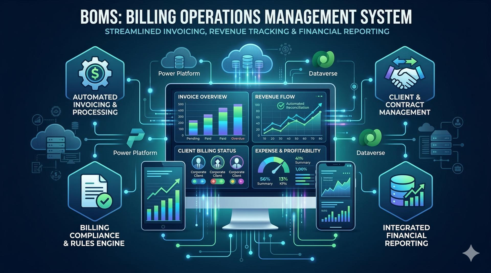

Workflow Automation System
Billing Operations Management System (BOMS)
Centralized workflow control platform designed to standardize billing operations, reduce manual administrative effort, and improve visibility into workflow status, ownership, and deadline performance.
Positioned as an operational control and workflow automation solution built on process structure, repeatability, and measurable reduction in manual work rather than UI-first presentation.
Business Context
Business Issues Addressed
BOMS was designed to replace fragmented billing coordination with a structured operational model that improves control, consistency, and execution transparency.
Primary Business Issues
- Fragmented billing workflow tracking across email, spreadsheets, and manual follow-up
- Inconsistent process execution caused by unclear ownership and stage handling
- High administrative workload tied to repetitive filtering, routing, and monitoring tasks
- Increased risk of delays, rework, and missed compliance-related deadlines
Operational Consequences
- Limited real-time visibility into backlog, status, and assignment distribution
- Reactive handling of issues instead of controlled workflow progression
- Reduced accountability due to disconnected work tracking methods
- Higher dependency on manual specialist effort for process continuity
System Design
Solution Architecture
The system introduces structured workflow stages, centralized work tracking, and automation-driven task movement so billing operations can run through a more repeatable and controlled model.
Architecture Direction
BOMS centralizes billing work into a single operating framework where task status, ownership, deadlines, and processing state are visible and actionable from one controlled environment.
- Stage-based workflow execution
- Rule-driven task progression
- Automated notifications and reminders
- Centralized record visibility for operational review
Delivery Model
Built around Microsoft Power Platform components to support workflow orchestration, structured record handling, and repeatable operational administration without relying on disconnected manual tracking.
Capability Areas
System Capabilities
The project was built around standardized execution, reduced manual effort, and stronger operational accountability.
Structured Workflow Execution
Billing tasks were reorganized into defined workflow stages with clearer handling logic and reduced ambiguity.
Process Automation
Routine administrative actions were automated so analyst effort could be redirected toward validation and exception handling.
Operational Visibility
Centralized tracking improved status monitoring, assignment transparency, and deadline awareness across active work.
Control and Accountability
Standardized workflow handling improved consistency, ownership clarity, and supervisory oversight.
Measured Results
Impact
The primary value of BOMS is operational: measurable reduction in manual workload, stronger control over workflow execution, and improved transparency into active billing work.
Efficiency Outcomes
- Estimated reduction of manual processing by approximately 60%
- Time savings of approximately 25+ hours per week
- Reduced repetitive administrative handling
Control Outcomes
- Improved consistency in process execution
- Better visibility into workload distribution and deadlines
- Stronger accountability through centralized workflow ownership
Project Navigation
Source and Portfolio Links
Move to the broader portfolio or review the full repository directly.
Main Portfolio
Return to the primary portfolio landing page.
Source Repository
Review the repository and supporting documentation directly on GitHub.